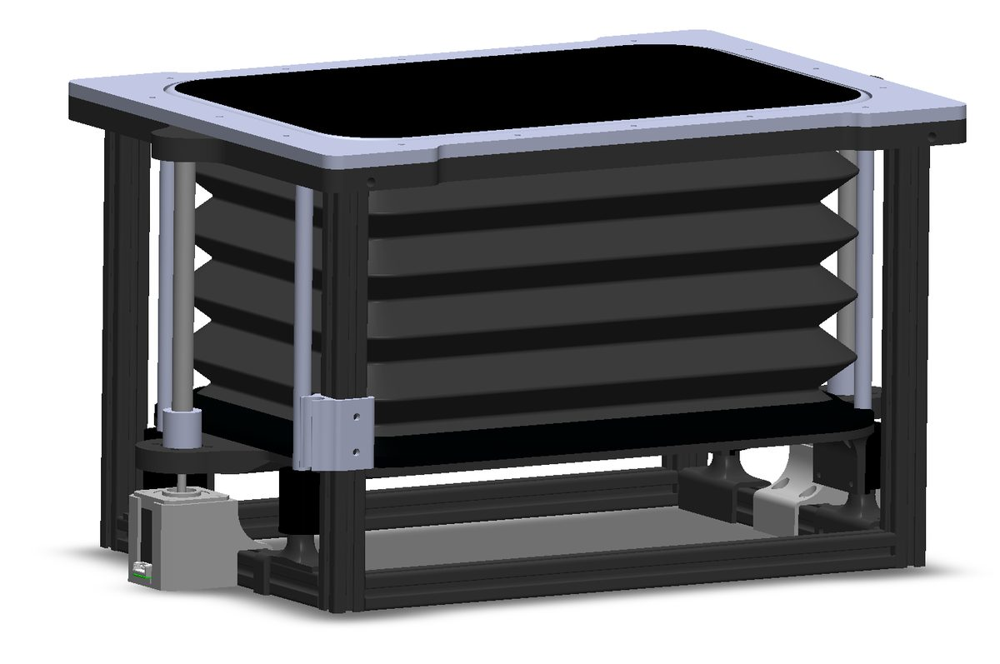
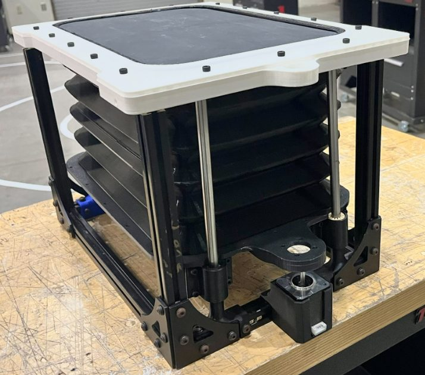
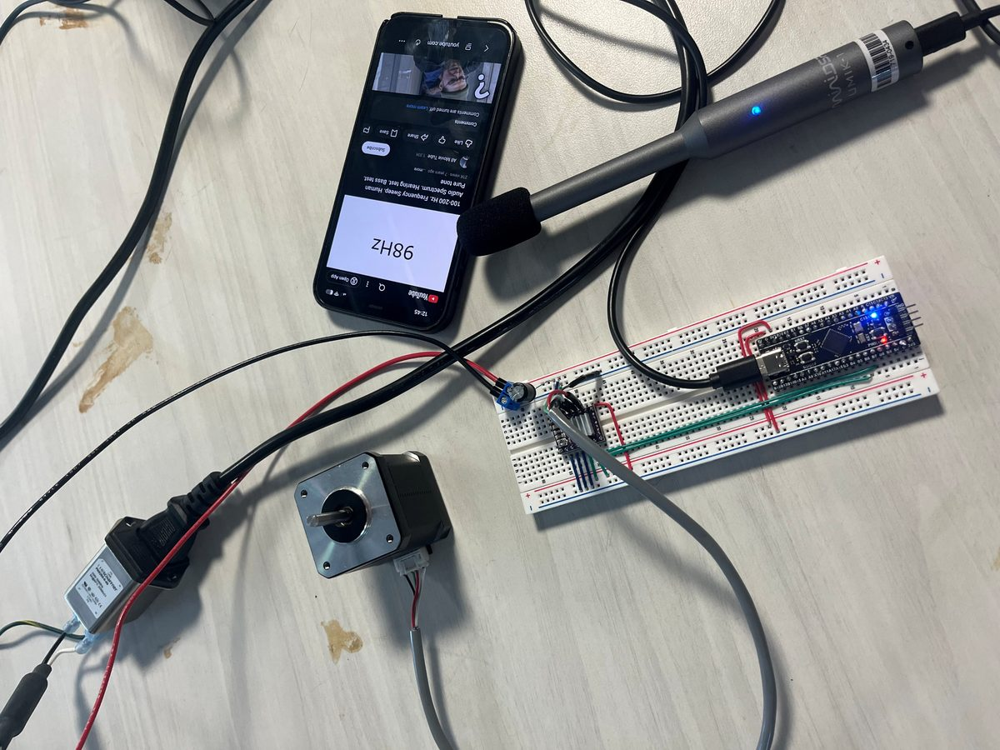
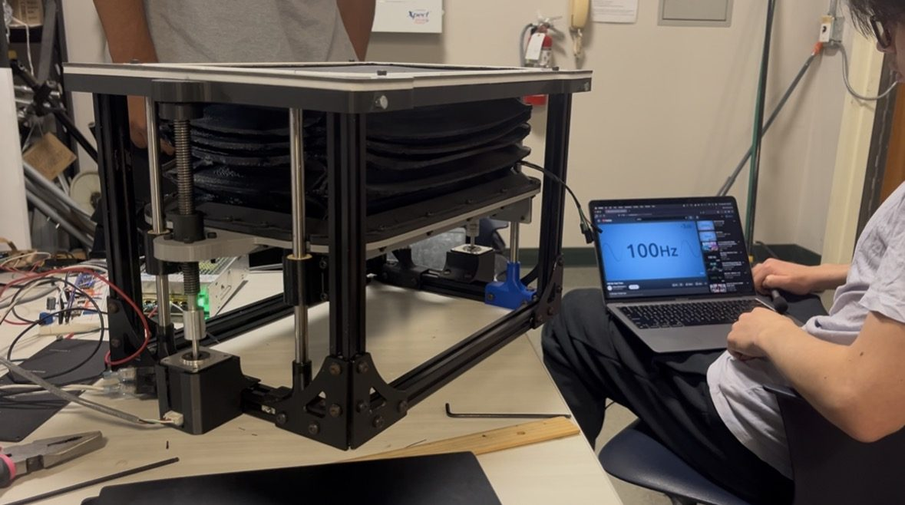

Verification
Feasibility prototype · May 2026Actuator and electronics
60–250Hz
Frequency sweep. The controller smoothed noisy readings, and the actuators moved smoothly in both directions across the full height range.
Pressure equalization
4.49s
Average over five tests, each shifting the chamber depth three inches. The prototype used a small seal gap. The flight design uses a 13 mm orifice.
Launch vibration
10.3g RMS
Random profile from 20 to 2000 Hz on a shake table, ramped through 25, 50, and 75 percent, then held at 100 percent for 5 minutes. The only issue was loose hex nuts, so we switched to lock nuts.






What these tests did and did not show. They verified that the mechanism tunes, equalizes pressure, and survives launch-like vibration. The prototype used a TPU housing and mass-loaded vinyl membrane instead of flight materials. The planned acoustic test, measuring low-frequency noise reduction against the NC-40 criterion, was not completed because we did not have a suitable test facility. The predicted noise reduction comes from analysis, not measurement.